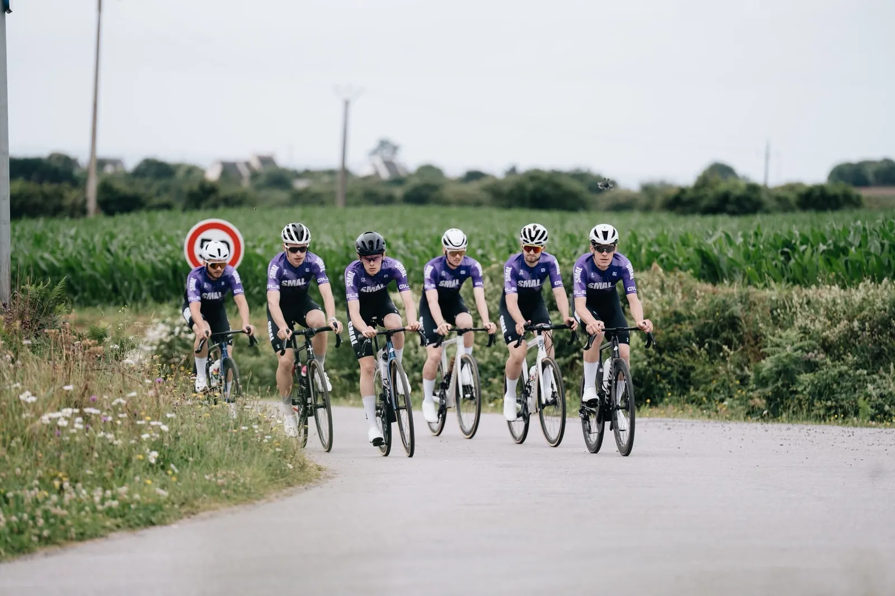
Notre vision
Créer pour oser.
Fédérer autour du dépassement de soi. SMAL & CO réunit une équipe cycliste affiliée FFC, un pôle running et trail, et une cellule de production de contenus pour raconter nos aventures de l’intérieur.
Nos missions
Quatre terrains, une seule équipe
Notre histoire
Quatre amis,
une idée.
Du Tour de France 2025 à l’affiliation FFC : les étapes clés.
-
L’étincelle du Tour de France
Le Tour de France 2025 passe, l’euphorie nous gagne : on lance notre propre aventure. SMAL, c’est d’abord « Studios of Matthieu And Lucas ». Puis Alexis et Maël montent à bord : place aux « Studios of Matthieu, Maël, Alexis & Lucas ».
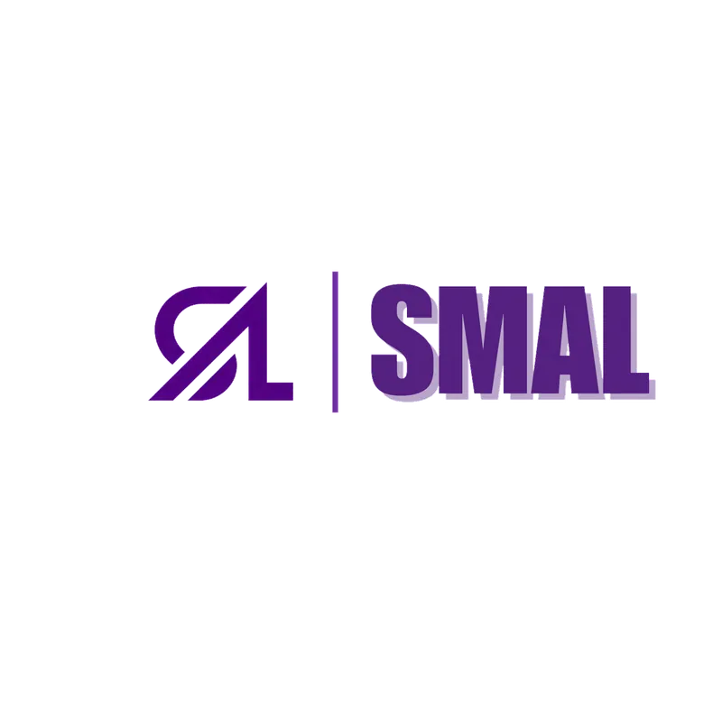
-
L’assemblée constitutive de l’association SMAL
Statuts adoptés à l’unanimité, premier bureau élu : l’association SMAL est déclarée à Brest. SMAL & CO n’existe pas encore. Cap fixé : une tenue commune et l’Étape du Tour.
4fondateurs · statuts adoptés à l’unanimité -
Premières courses & naissance du studio de création
Trophée Centre Morbihan, Penn ar Bed, Sébaco : les membres s’autofinancent et filment tout en immersion (Reels, TikTok, photos). De ces reportages terrain naît l’idée d’un vrai studio de création.
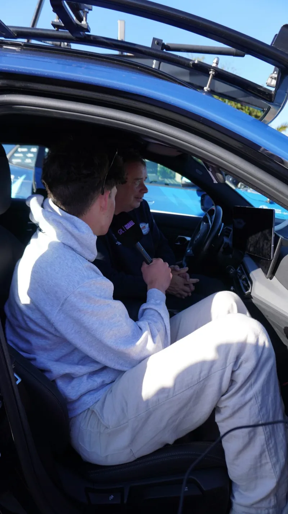
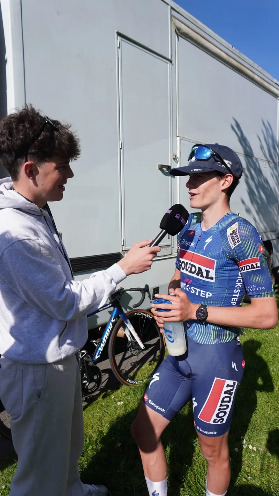
-
Lancement de SMAL & CO, une tenue civile à sept
Le projet grandit : SMAL & CO naît, collectif élargi de SMAL. Les 4 co-fondateurs du bureau sont rejoints par 3 membres actifs. On est sept.
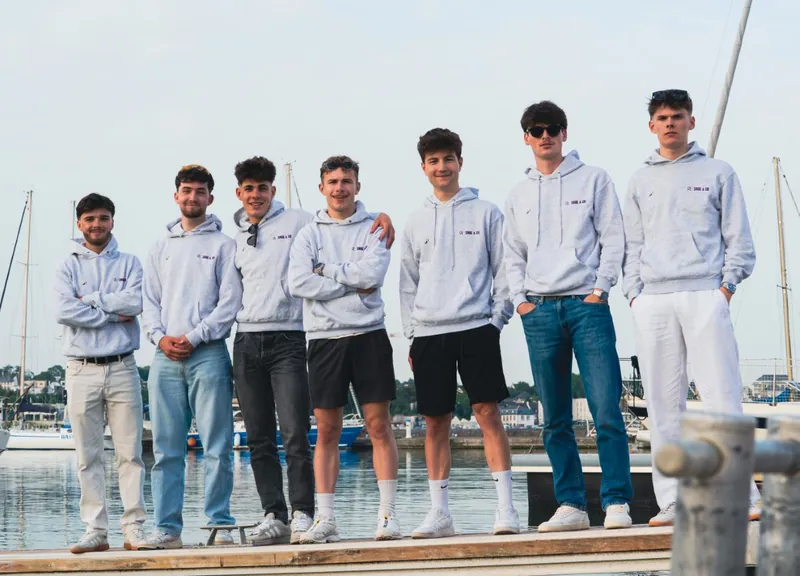
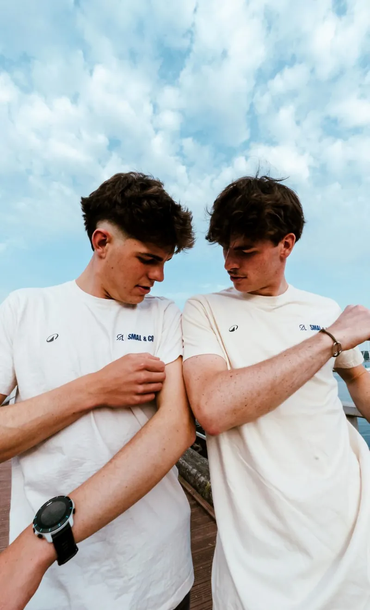
-
Guerlédan : le running entre en scène
L’équipe chausse les baskets autour du lac de Guerlédan. Emmenés par Ewen Prémel, chef de file de la discipline, la course à pied et le trail deviennent notre deuxième pôle sportif.

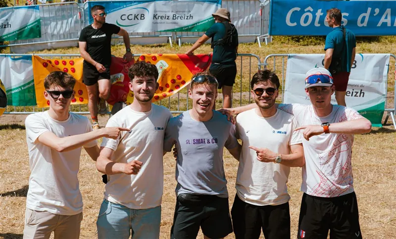
-
Les premières tenues avec Alé Cycling
Nos toutes premières tenues cyclistes sont dévoilées, conçues avec le soutien de la marque italienne Alé Cycling.
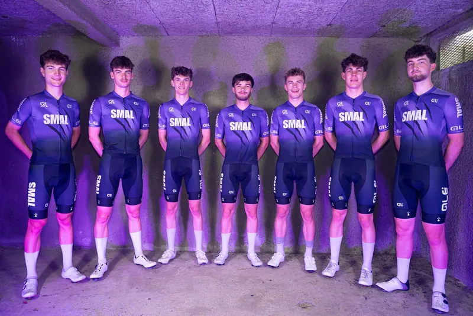
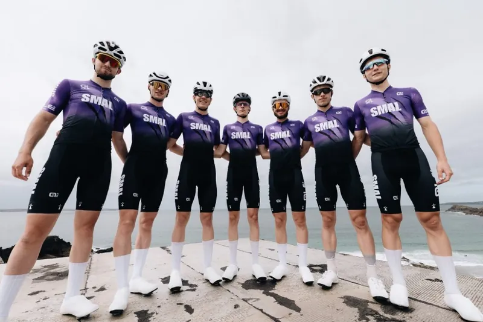
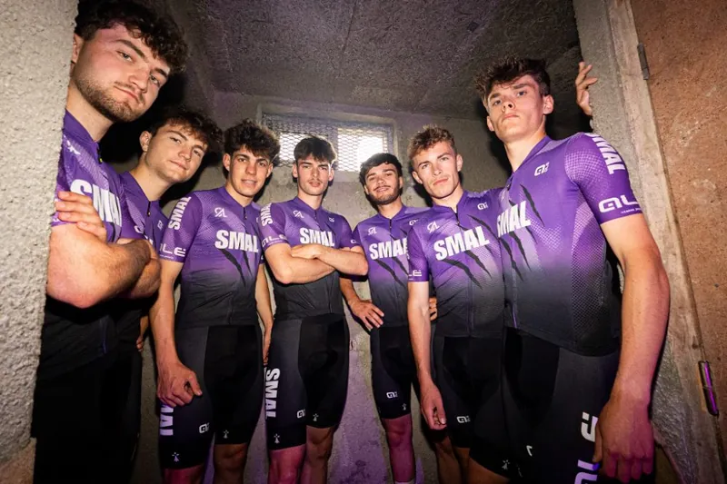
-
L’Étape du Tour : premier grand défi collectif
Les sept au départ de l’Étape du Tour, direction l’Alpe d’Huez. Une journée d’effort en montagne qui soude l’équipe, et des vacances inoubliables entre potes.
7membres au départ · Alpe d’Huez -
Le Défi KOM Plougastel
Notre premier challenge ouvert à tous : un chrono à battre sur notre segment Strava à Plougastel. À la clé pour les vainqueurs homme et femme : maillots et bons d’achat Hobby Cycles.
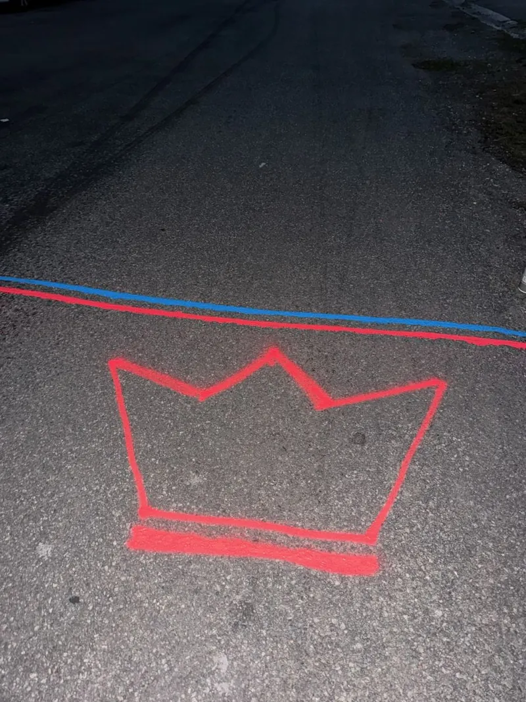
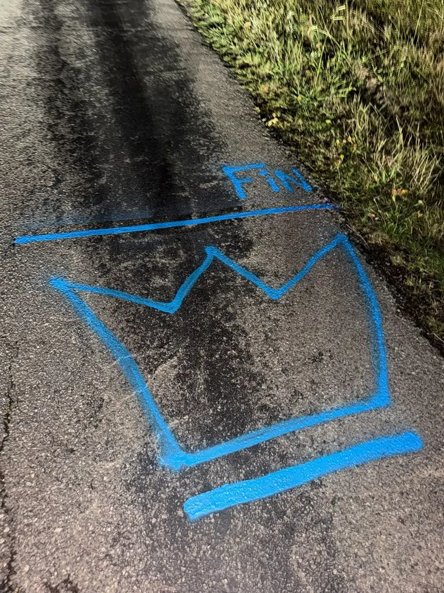
-
Affiliation FFC & création de la Team 2027
Officiellement affiliés à la Fédération Française de Cyclisme. La team de compétition SMAL & CO est créée, prête pour 2027.
Club affilié · Team 2027 ×
×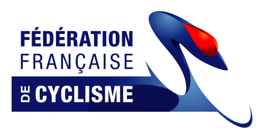
-
Partenariats officiels & SMAL & CO Cyclo
Premiers partenaires majeurs signés : Hobby Cycles, Overstim.s et PG Tubes. Le 18 octobre, la section running court à Rennes.
25 octobre 2026 : 1re « SMAL & CO CYCLO », 100 cyclistes au départ.
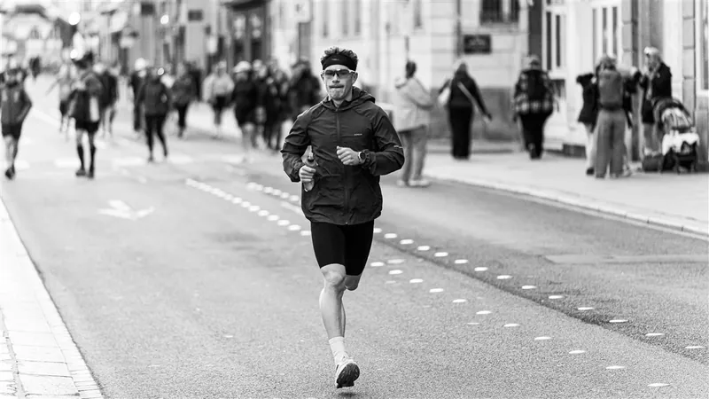
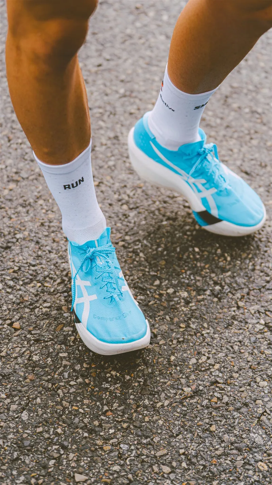
-
La saison de compétition
Structurer l’équipe, courir les épreuves régionales et lancer de nouveaux projets sportifs et médiatiques.
2027on écrit la suite


Le bureau

Matthieu Bruno
Président
Social Rides estivaux · Running · Partenariats

Lucas Blonce Lossec
Secrétaire
Communication · Club · Cyclo

Alexis Le Dez
Trésorier
Club · Partenaires · Événements

Maël Guittet Grard
Responsable
Communication · Défis · Engagement
Construisons la suite.
Partenaire, organisateur ou simple curieux : écrivez-nous.